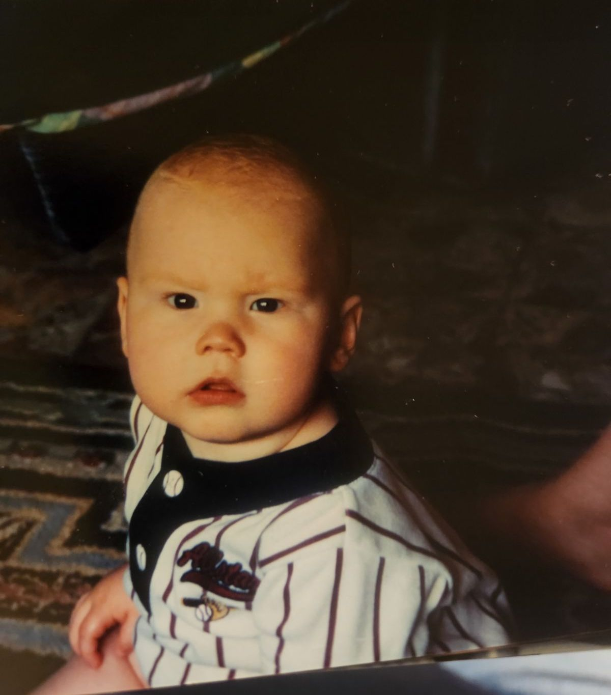

I've got the need for spe—competition
I'm an ex-athlete. After high school sports ended, I continued to play pick up basketball, tennis, ultimate frisbee, etc with my friends pretty regularly. I'd rather just get really good at a single sport. Still though, it was fun but often lacking intensity. People just don't take leisurely games all that serious.
Over time my friends, and probably people my age in general, started playing less and less. It has become harder to find people that wanna play anything. I rolled with the punches trying to find other ways to fill my time. But finally, I've accepted this isn't working for me.
Competition is a basic need: similar to food, water, sleep, love, and expression – if you are the creative type. Like these other basic needs, I am happiest when there is a stable and predictable supply. In retrospect it seems obvious. I've been playing and competing since I was a child. I encourage all my ex-athlete peers to take note of whether you miss playing sports. You don't have to stop.
Maybe this is a good time to start some kind of intramural league. I gave this a shot with tennis at my college, and it turns out there is already a thriving community in Jonesboro. I'll be playing in a tennis league here shortly :)
Competing is probably not a basic need for all people, but it might be for you.
2023-10-03(Here I'm obviously puzzled as to why I'm wearing a baseball jersey yet not playing.)
